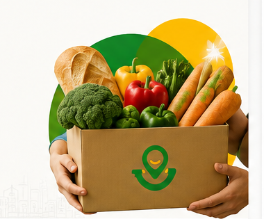

Reduza o desperdício
de alimentos
✦ Juntos contra o desperdício
Transforme alimentos em esperança.
Conectamos doadores a instituições que levam alimentação para quem mais precisa.
Acesso seguro com Google preparado para a experiência demonstrativa.

Doação confirmada
Alimento a caminho
R
O
V
+340 instituições
conectadas à rede
Ajude quem mais
precisa
Gere impacto positivo
na sua comunidade
Impacto da comunidade
Impacto que transforma
Indicadores demonstrativos da transformação que queremos construir juntos.
Alimentos doados
Refeições geradas
Desperdício evitado
Instituições atendidas
* Valores demonstrativos. Futuramente, os dados serão atualizados pelo sistema.
01. O problema
Alimento disponível.
Alimento disponível.
Pessoas sem acesso.
Alimentos próprios para consumo são descartados todos os dias, enquanto milhares de pessoas enfrentam a fome. A distância entre esses dois lados não deveria existir.
“O desperdício não é falta de alimento. É falta de conexão.”
Desperdício de alimentos
Excedentes perdem valor antes de chegar a quem mais precisa.
Falta de conexão
Doadores não encontram instituições confiáveis com rapidez.
Processos desorganizados
Reservas, retiradas e resultados ficam dispersos e sem acompanhamento.
02. Como funciona
Uma conexão simples.
Uma conexão simples.
Um impacto enorme.
Da disponibilidade do alimento até a transformação na comunidade.
Cadastre
Informe os alimentos disponíveis para doação.
Encontre
Conecte-se a uma instituição ou doação próxima.
Reserve
Confirme a doação e organize a retirada.
Entregue
Realize a coleta e leve o alimento ao destino.
Impacte
Registre o resultado e acompanhe a transformação.
♥ Tecnologia e solidariedade trabalhando na mesma direção.
03. Funcionalidades
Tudo para doar.
Tudo para doar.
Tudo para transformar.
Uma prévia da experiência completa que será desenvolvida na área interna do iFeed.
Cadastro de doações
Alimento, quantidade, validade, foto e retirada em poucos passos.
Mapa ou lista
Encontre oportunidades próximas de forma simples e rápida.
Reserva e acompanhamento
Acompanhe cada etapa: disponível, reservada, coletada e entregue.
Painel de impacto
Visualize alimentos doados, refeições geradas e desperdício evitado.
Selos e certificados
Reconhecimento para quem transforma excedentes em impacto social.
Experiência responsiva
Uma plataforma preparada para computador, tablet e celular.
04. Para quem
Uma rede que conecta
Uma rede que conecta
quem tem com quem precisa.
Para
Quem pode doar
- Restaurantes
- Padarias
- Supermercados
- Hortifrutis
- Lanchonetes
- Pessoas físicas
Para
Quem pode receber
- ONGs
- Bancos de alimentos
- Projetos sociais
- Voluntários
- Instituições
- Comunidades vulneráveis
Faça parte dessa rede
Juntos, podemos alimentar o presente e transformar o futuro.
Faça parte de uma rede que aproxima solidariedade, tecnologia e impacto social.
O acesso Google depende da configuração pública do Firebase descrita no guia.